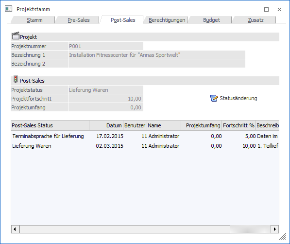
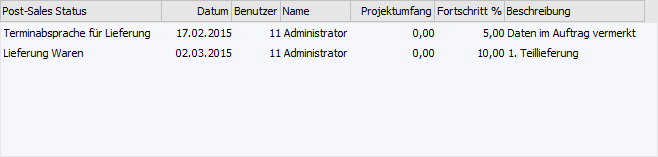

In dem Register "Post-Sales" werden die Schritte der Pre-Sales-Phase angezeigt.

Ø Projektnummer
An dieser Stelle wird die Projektnummer des aktuellen Projekts angezeigt.
Ø Bezeichnung 1 / Bezeichnung 2
An dieser Stelle wird die Bezeichnung bzw. Beschreibung des Projekts dargestellt.
Ø Projektfortschritt
Hier wird der aktuelle Post-Sales-Status angezeigt.
Ø Projektfortschritt
Hier wird der aktuelle Post-Sales-Projektfortschritt angezeigt.
Ø Projektumfang
Hier wird der aktuelle Post-Sales-Projektumfang angezeigt.
Ø Statusänderung
Durch Drücken dieses Buttons kann der Status des Projekts verändert werden. Hierbei sind die Anlage neuer Stati, sowie die Änderung bestehender Stati möglich.
Tabelle "Post-Sales"
In der Tabelle "Post-Sales" werden alle bisher erfassten Post-Sales-Stati des Projekts aufgelistet.

Ø Post-Sales Status
In dieser Spalte wird der Text des Post-Sales-Status dargestellt.
Ø Datum
An dieser Stelle wird das Erfassungsdatum der Post-Sales-Zeile angezeigt.
Ø Benutzer
In der Spalte "Benutzer" wird der Benutzer der Erfassung angezeigt.
Ø Name
Hier wird der Name des Benutzers in Klarschrift angezeigt.
Ø Projektumfang
Pro Post-Sales-Erfassung kann ein Projektumfang angegeben werden, welcher hier ausgewiesen wird.
Ø Fortschritt %
In dieser Spalte wird der erfasste Projektfortschritt dargestellt.
Ø Beschreibung
Pro Post-Sales-Erfassung kann eine Detailbeschreibung angegeben werden, welche hier ausgewiesen wird.